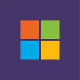

AZ-900 Azure Fundamentals
I earned this Microsoft certification, which backs my knowledge of the cloud and the services offered by Microsoft Azure. I learned about service models (IaaS, PaaS, SaaS), core Azure services, as well as security, compliance, pricing and support.
Obtuve esta certificación de Microsoft que respalda mis conocimientos sobre la nube y los servicios que ofrece Microsoft Azure. Aprendí sobre modelos de servicio (IaaS, PaaS, SaaS), servicios principales de Azure, así como aspectos de seguridad, cumplimiento, precios y soporte.
View CertificateVer CertificadoAI-900 Azure AI Fundamentals
This Microsoft certification backs my knowledge of Azure artificial intelligence. I learned about machine learning, computer vision, natural language processing and conversational agents, as well as tools such as Azure Machine Learning.
Con esta certificación de Microsoft que respalda mis conocimientos en inteligencia artificial de Azure. Aprendí sobre el aprendizaje automático, visión por computadora, procesamiento de lenguaje natural y agentes conversacionales, así como el uso de herramientas como Azure Machine Learning.
View CertificateVer CertificadoFoundational C# with Microsoft
This Microsoft certification validates foundational C# knowledge, covering key concepts such as object-oriented programming, exception handling and control structures.
Esta certificación de Microsoft valida conocimientos fundamentales de C#, cubriendo conceptos clave como programación orientada a objetos, manejo de excepciones y estructuras de control.
View CertificateVer CertificadoSOLID Principles and Clean CodePrincipios SOLID y Clean Code
This course teaches SOLID principles and Clean Code, focusing on clear names for variables and methods, maintainable code and practices such as single responsibility.
Este curso enseña principios SOLID y Clean Code, enfocándose en nombres claros para variables y métodos, código mantenible y prácticas como responsabilidad única.
View CertificateVer CertificadoDesign Patterns in C#Patrones de diseño en C#
This course teaches design patterns in C# applied to ASP.NET, such as Singleton, Repository and Factory Method, improving code scalability, maintainability and organization.
Este curso enseña patrones de diseño en C# aplicados a ASP.NET, como Singleton, Repository y Factory Method, mejorando la escalabilidad, mantenibilidad y organización del código.
View CertificateVer Certificado.NET MAUI CourseCurso de .NET MAUI
This course teaches how to build cross-platform applications with .NET MAUI and Visual Studio 2022, from initial setup to creating functional, adaptable projects.
Este curso enseña a desarrollar aplicaciones multiplataforma con .NET MAUI y Visual Studio 2022, abordando desde la configuración inicial hasta la creación de proyectos funcionales y adaptables.
View CertificateVer CertificadoCSS3 and HTML CourseCurso de CSS3 y HTML
This course covers everything from the fundamentals to advanced CSS3 techniques, teaching how to design modern, responsive interfaces with animations, transitions and custom styles.
Este curso abarca desde los fundamentos hasta técnicas avanzadas de CSS3, enseñando cómo diseñar interfaces modernas y responsivas con animaciones, transiciones y estilos personalizados.
View CertificateVer CertificadoIntroduction to Concurrency in C#Introducción a la Concurrencia en C#
This course introduces concurrency, asynchrony and parallelism in C#, teaching how to optimize applications with async/await, Tasks and other tools to improve performance.
Este curso introduce los conceptos de concurrencia, asincronía y paralelismo en C#, enseñando cómo optimizar aplicaciones mediante async/await, Tasks y otras herramientas para mejorar el rendimiento.
View CertificateVer CertificadoLINQ C# 10
This course explores practical LINQ examples with C# 10, teaching how to write efficient queries over collections and filter, sort and transform data in a clear, functional way.
Este curso explora ejemplos prácticos de LINQ con C# 10, enseñando cómo realizar consultas eficientes sobre colecciones, filtrar, ordenar y transformar datos de manera clara y funcional.
View CertificateVer CertificadoGIT AND GITHUBGIT Y GITHUB
This professional Platzi course teaches advanced Git and GitHub usage, covering everything from version control to project collaboration and branching.
Este curso profesional de Platzi enseña el manejo avanzado de Git y GitHub, cubriendo desde control de versiones hasta la colaboración en proyectos y el uso de ramas.
View CertificateVer CertificadoBest Practices and Clean Code in C#Buenas Prácticas y Código Limpio en C#
This course covers best practices and principles for writing clean code in C#, teaching techniques such as meaningful names, refactoring and applying SOLID principles to improve software quality.
Este curso aborda buenas prácticas y principios para escribir código limpio en C#, enseñando técnicas como nombres significativos, refactorización y aplicación de principios SOLID para mejorar la calidad del software.
View CertificateVer CertificadoAPIs IN .NETAPIS EN .NET
This course teaches how to build robust, scalable APIs with .NET, from creating endpoints to implementing security and best practices in web service development.
Este curso enseña a construir APIs robustas y escalables con .NET, abordando desde la creación de endpoints hasta la implementación de seguridad y buenas prácticas en el desarrollo de servicios web.
View CertificateVer CertificadoIntroduction to Test AutomationIntroducción a la Automatización de Pruebas
This Platzi course introduces the basics of test automation, teaching tools and techniques to design, implement and run tests that improve software quality.
Este curso de Platzi introduce los conceptos básicos de la automatización de pruebas, enseñando herramientas y técnicas para diseñar, implementar y ejecutar pruebas que optimicen la calidad del software.
View CertificateVer CertificadoWorking with XAML in .NET MAUIManejo de XAML en .NET MAUI
This course focuses on working with XAML in .NET MAUI, teaching how to design cross-platform user interfaces efficiently and flexibly with this technology.
Este curso se enfoca en el manejo de XAML en .NET MAUI, enseñando cómo diseñar interfaces de usuario multiplataforma de manera eficiente y personalizable con esta tecnología.
View CertificateVer CertificadoWeb Development with Blazor and .NETDesarrollo WEB con Blazor y .NET
This Platzi course teaches how to build modern web applications with Blazor and .NET, creating dynamic interfaces and optimizing performance with cutting-edge technologies.
Este curso de Platzi enseña a desarrollar aplicaciones web modernas utilizando Blazor y .NET, creando interfaces dinámicas y optimizando el rendimiento con tecnologías de vanguardia.
View CertificateVer Certificado